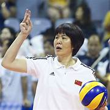

"Jenny" Lang Ping ( chinês :郎平; pinyin : Láng Píng ; nascida em 10 de dezembro de 1960) é uma ex- jogadora e treinadora de vôlei chinesa . Ela é a ex-treinadora principal da seleção feminina de vôlei da China e da seleção feminina de vôlei dos Estados Unidos . Como jogadora, Lang ganhou o prêmio de jogadora mais valiosa do vôlei feminino nas Olimpíadas de 1984.

Veja um pouco de suas jogadas